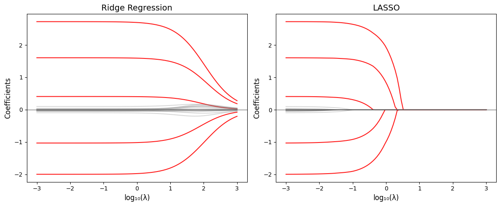

import numpy as np
import matplotlib.pyplot as plt
from sklearn.linear_model import Ridge, Lasso, LassoCV, RidgeCV
from sklearn.preprocessing import StandardScaler
from sklearn.model_selection import cross_val_score
np.random.seed(42)
n, p = 100, 20
X = np.random.randn(n, p)
beta_true = np.zeros(p)
beta_true[:5] = [3, -2, 1.5, -1, 0.5] # 只有5个非零系数
y = X @ beta_true + np.random.randn(n) * 0.5
scaler = StandardScaler()
X_scaled = scaler.fit_transform(X)
# 系数路径
alphas = np.logspace(-3, 3, 100)
ridge_coefs, lasso_coefs = [], []
for a in alphas:
ridge_coefs.append(Ridge(alpha=a).fit(X_scaled, y).coef_)
lasso_coefs.append(Lasso(alpha=a, max_iter=10000).fit(X_scaled, y).coef_)
fig, axes = plt.subplots(1, 2, figsize=(12, 5))
for i in range(p):
color = 'red' if i < 5 else 'gray'
alpha_line = 0.9 if i < 5 else 0.3
axes[0].plot(np.log10(alphas), [c[i] for c in ridge_coefs],
color=color, alpha=alpha_line)
axes[1].plot(np.log10(alphas), [c[i] for c in lasso_coefs],
color=color, alpha=alpha_line)
axes[0].set_xlabel('log₁₀(λ)', fontsize=12)
axes[0].set_ylabel('Coefficients', fontsize=12)
axes[0].set_title('Ridge Regression', fontsize=14)
axes[0].axhline(y=0, color='black', linestyle='-', linewidth=0.5)
axes[1].set_xlabel('log₁₀(λ)', fontsize=12)
axes[1].set_ylabel('Coefficients', fontsize=12)
axes[1].set_title('LASSO', fontsize=14)
axes[1].axhline(y=0, color='black', linestyle='-', linewidth=0.5)
plt.tight_layout()
plt.show()